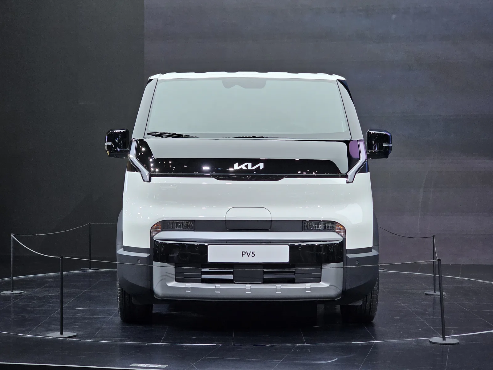
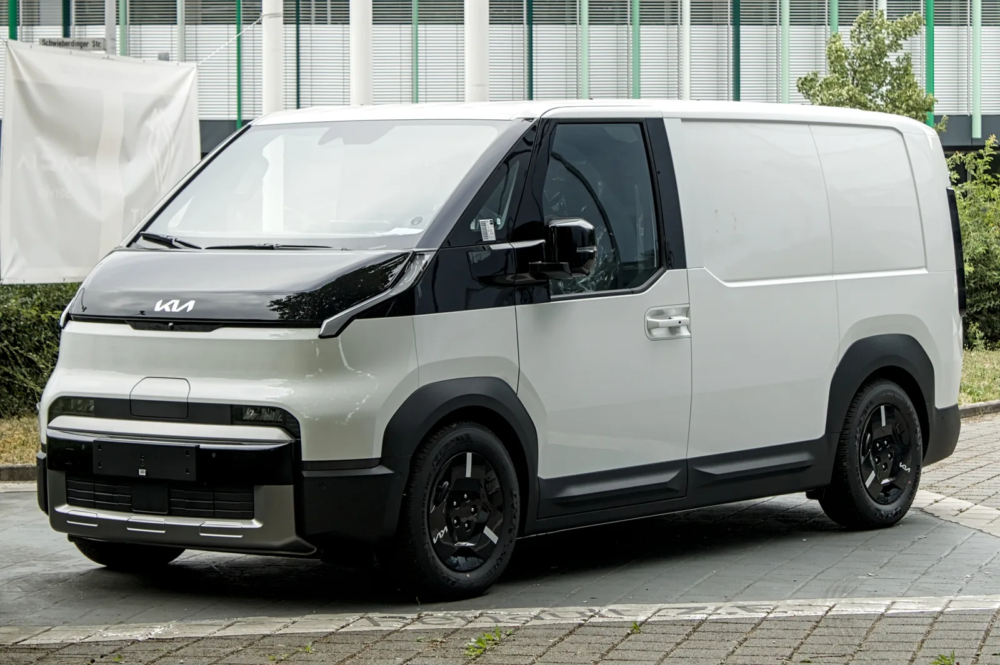
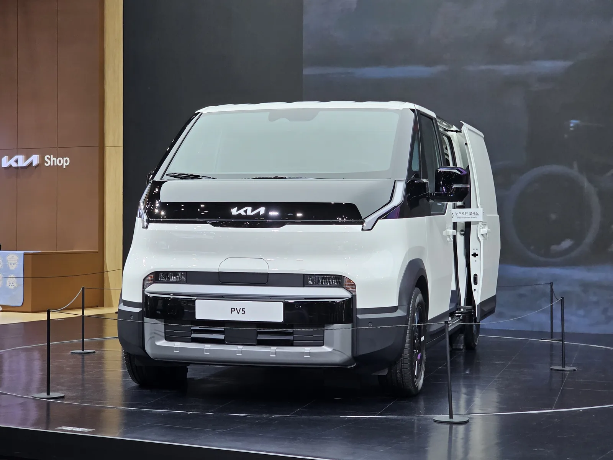
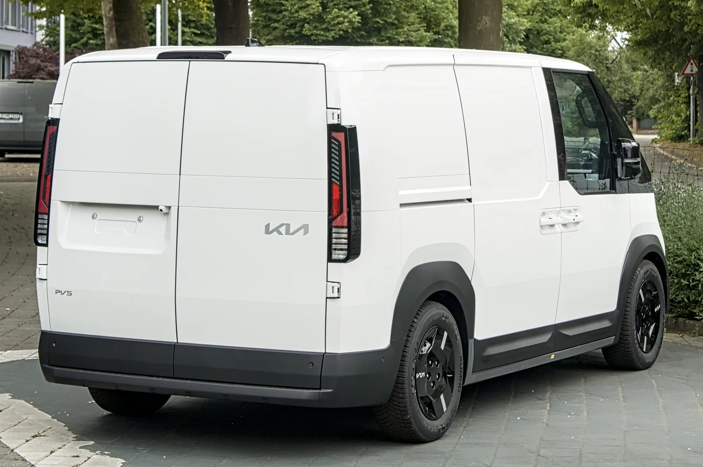

▲ 기아 PV5 카고. 우정사업본부에 공급되는 집배차는 낮은 차체와 ADAS 등 집배 현장 맞춤 사양이 적용됐다. 사진=Wikimedia Commons
집배원의 손을 든 200대, 배경은 '두 달간의 현장 실증'
기아가 전동화 목적기반차량(PBV) '더 기아 PV5' 카고 모델 200대를 우정사업본부에 공급한다고 밝혔다. 이달(2026년 9월)부터 전국 우체국에 순차적으로 배치되며, 지피코리아 원문에서 확인 가능하다.
이번 공급은 단순 납품이 아니라 실제 집배 현장의 요구를 반영해 설계를 조정한 결과다. 기아는 지난해 9월부터 11월까지 약 두 달간 전국 9개 지방우정청 산하 거점우체국에 PV5 카고를 투입해 운영 실증을 진행했다. 이 기간 동안 현장 집배원들의 의견을 수렴해 최종 사양을 확정했고, 그 결과물이 이번에 배치되는 200대다.
기아 국내사업본부 관계자는 "이번 공급은 단순히 차량을 제공하는 데 그치지 않고 실제 우편배송 현장의 목소리를 적극 반영해 업무에 꼭 맞는 PBV를 구현한 사례"라고 밝혔다.
PV5 카고, 무엇이 달라졌나 — 집배 현장 맞춤 사양

▲ PV5 카고 전측면. 낮은 차체 설계로 하루 수십 차례 반복되는 승하차 부담을 줄였다. 사진=Wikimedia Commons
우정사업본부에 공급되는 PV5 카고에는 다음과 같은 집배 업무 맞춤 사양이 적용됐다.
- 낮은 차체 설계 — 하루에도 수십 차례 타고 내려야 하는 집배원의 신체 부담을 줄이기 위한 설계 변경
- 첨단 운전자 보조 시스템(ADAS) — 골목길·주택가 저속 주행이 잦은 집배 특성을 고려한 안전 장비
- 도어 파손 방지 장치 — 반복적인 개폐로 인한 손상을 줄이는 보강 구조
- 알루미늄 바닥·평탄화된 적재 공간 — 우편물 적재·하역 효율을 높인 화물칸 구성
기본이 되는 PV5 카고의 플랫폼은 PBV 전용 전동화 플랫폼 'E-GMP.S'다. 국내 시판 모델 기준으로 71.2kWh 배터리를 얹은 롱레인지는 1회 충전 최대 377km, 51.5kWh 배터리의 스탠다드는 280km를 주행한다. 국내 사양 기준 최대 적재중량은 스탠다드 700kg, 롱레인지 600kg이며, 전장 4,695mm 롱 모델 기준 최대 적재 용량은 4,420L에 달한다. 앞서 기아는 유럽 사양 71.2kWh 배터리 탑재 4도어 모델이 665kg의 최대 적재중량을 실은 채 1회 충전으로 693.38km를 주행해 전기 경상용차(eLCV) 부문 기네스 세계기록에 오르기도 했다.

▲ PV5 카고의 적재 공간 내부. 알루미늄 바닥과 평탄화된 화물칸으로 우편물 적재·하역 효율을 높였다. 사진=Wikimedia Commons
기존 집배 수단과 무엇이 다른가

▲ PV5 카고 후측면. 적재함 도어와 KIA 로고가 보인다. 사진=Wikimedia Commons
우정사업본부의 전동화 전환 시도는 이번이 처음은 아니다. 2018~2020년 우편배달용 이륜차(오토바이) 1만5,000대 중 1만 대를 초소형 전기차로 전환하는 사업이 추진됐지만, 실제로는 1,000대 시범 도입에 그쳤다. 당시 도입된 초소형 전기차들은 집배원 안전과 직결되는 에어백이 없었고, 일부 모델은 경고음 발생장치가 미흡하거나 ABS 브레이크조차 장착되지 않아 배터리 충전 문제와 안전사고 우려까지 겹치며 현장의 수요를 얻지 못했다.
이번 PV5 카고 도입은 그와 결이 다르다. 초소형 전기차가 아닌 정식 PBV 플랫폼 기반 양산차를 투입하고, 배치 전 두 달간 실제 우체국 현장에서 운영 실증을 거쳐 문제점을 사전에 걸러냈다는 점이 차이다. 오토바이·경차 위주였던 기존 집배 수단 대비 ADAS, 넓은 적재 공간, 낮은 승하차 설계 등으로 안전성과 업무 효율을 함께 노렸다.
오토바이 집배는 골목길 진입이 쉽다는 장점이 있지만, 운전자가 그대로 노출돼 사고·기상 위험에 취약하고 우편물 보호에도 한계가 있다는 지적이 꾸준히 제기돼 왔다. 우정사업본부가 2018년 초소형 전기차 전환 사업을 추진하며 당시 강성주 우정사업본부장이 "집배원의 안전사고 발생이 대폭 줄고 근로여건이 크게 향상될 것"이라고 밝힌 것도 이런 배경에서다. PV5 카고는 밀폐형 차체로 운전자를 외부 충격·기상으로부터 보호하고, 전방충돌방지·차로유지 등 ADAS로 저속 골목 주행 시 사고 위험을 낮추는 한편, 알루미늄 바닥의 넓은 적재함으로 우편물 파손·도난 우려도 줄인다. 다만 이번 200대 배치가 구체적으로 어느 지방우정청·우체국을 우선순위로 하는지는 아직 공개되지 않았으며, 앞서 실증을 거친 9개 지방우정청 산하 거점우체국이 우선 배치 대상에 포함될 가능성이 높다.
우정사업본부의 전동화 전환, 차량 공급을 넘어선 지원

▲ PV5 카고 측면. 슬라이딩 도어를 열어 적재 공간을 보여주는 전시 모델. 사진=Wikimedia Commons
기아는 이번 공급에서 차량 자체뿐 아니라 우정사업본부의 전기차 운영 환경 구축까지 지원할 계획이라고 밝혔다. 구체적으로는 차량 운영 관리자를 대상으로 한 EV 교육, 맞춤형 충전·정비 솔루션 제공 등이 포함된다. 앞선 초소형 전기차 도입 시도가 충전 인프라와 정비 체계 미비로 어려움을 겪었던 점을 감안하면, 이번에는 차량 배치와 함께 운영 인프라를 동시에 갖추려는 접근으로 볼 수 있다.
기아 입장에서도 이번 공급은 PV5 라인업의 공공·법인 수요 확장 사례다. 기아는 PV5·PV7에 이어 2029년 PV9까지 이어지는 3단계 PBV 라인업으로 2030년 연간 23만 2,000대 판매를 목표로 잡고 있으며, PV5는 올해 8월까지 글로벌 누적 3만 9,000여 대가 팔리며 기아 전기차 판매 3위에 오른 바 있다. 우체국 집배차 200대는 그 판매 곡선에 공공기관 수요라는 새 축을 더하는 사례다.

▲ PV5 카고 후측면 3/4 각도. 밀폐형 화물칸 구조로 우편물을 외부 충격과 기상으로부터 보호한다. 사진=Wikimedia Commons
전망 — 200대는 시작점이 될까
현재까지 공개된 내용은 200대 배치와 이달 순차 투입 일정, 실증 이력, 지원 계획 정도다. 계약 금액이나 향후 추가 도입 규모, 우정사업본부 측의 공식 입장은 아직 보도되지 않았다. 다만 앞선 전기 이륜차 도입이 안전성 논란과 인프라 부족으로 좌초한 전례가 있는 만큼, 이번 PV5 카고 200대가 실제 집배 현장에서 얼마나 안착하느냐가 추가 확대 여부를 가를 관건이 될 전망이다. 우정사업본부는 전국 우체국망을 운영하는 대형 차량 수요처인 만큼, 이번 사례가 순조롭게 정착할 경우 다른 공공기관의 상용 전기차 도입에도 참고 사례가 될 수 있다.